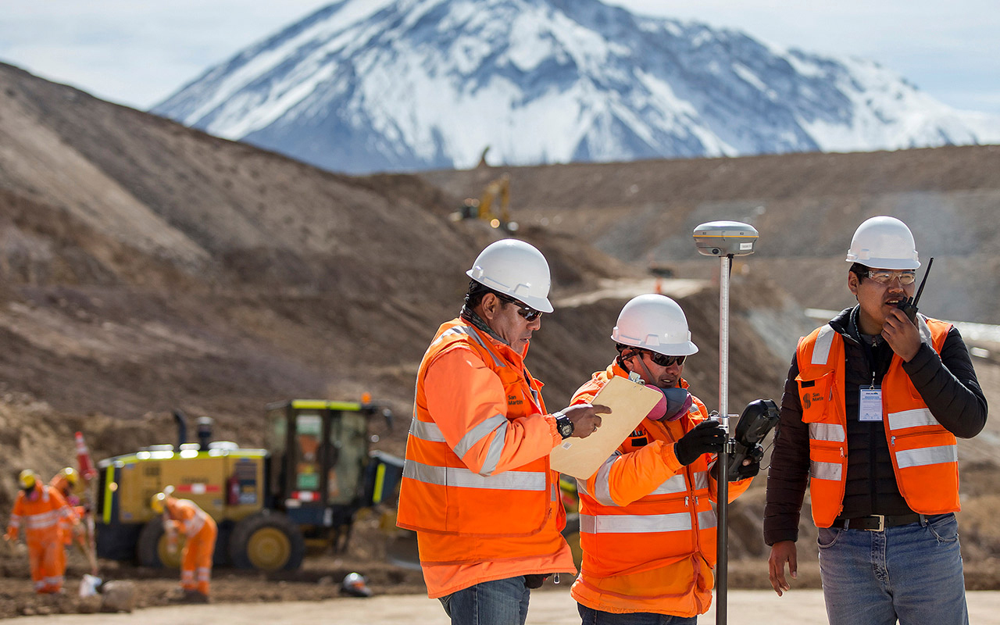
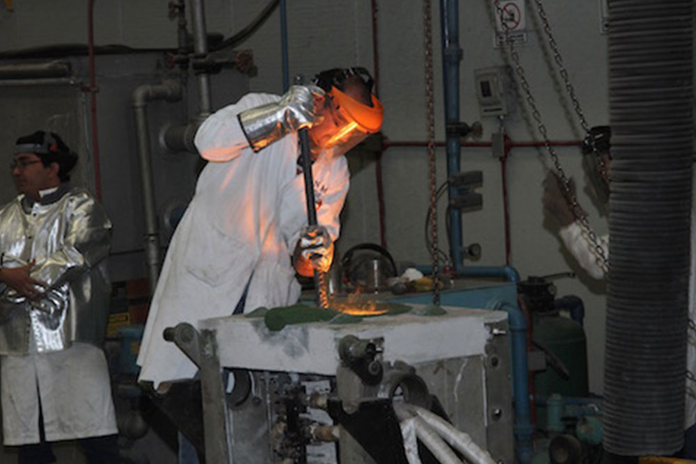

Ingenieria de Minas
La ingeniería de minas es una disciplina de la ingeniería que se enfoca en la extracción eficiente y responsable de los recursos minerales de la Tierra. Los ingenieros de minas están involucrados en todas las etapas del proceso minero, desde la exploración y evaluación de yacimientos hasta el diseño, operación y cierre de minas.
Conocer MásIngenieria Metalurgica
La ingeniería metalúrgica es una rama de la ingeniería que se centra en el estudio de los procesos y tecnologías para la extracción, procesamiento y tratamiento de metales y materiales metálicos. Los ingenieros metalúrgicos trabajan en la transformación de minerales en metales útiles y en el desarrollo de aleaciones y materiales avanzados con propiedades específicas para diversas aplicaciones industriales.
Conocer Más